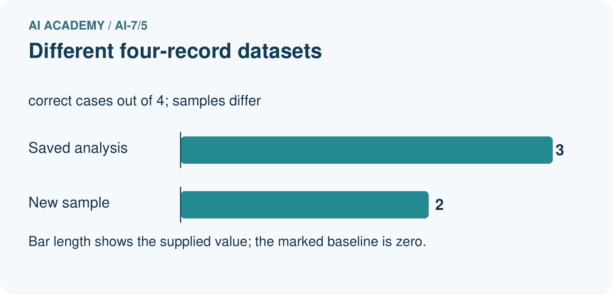
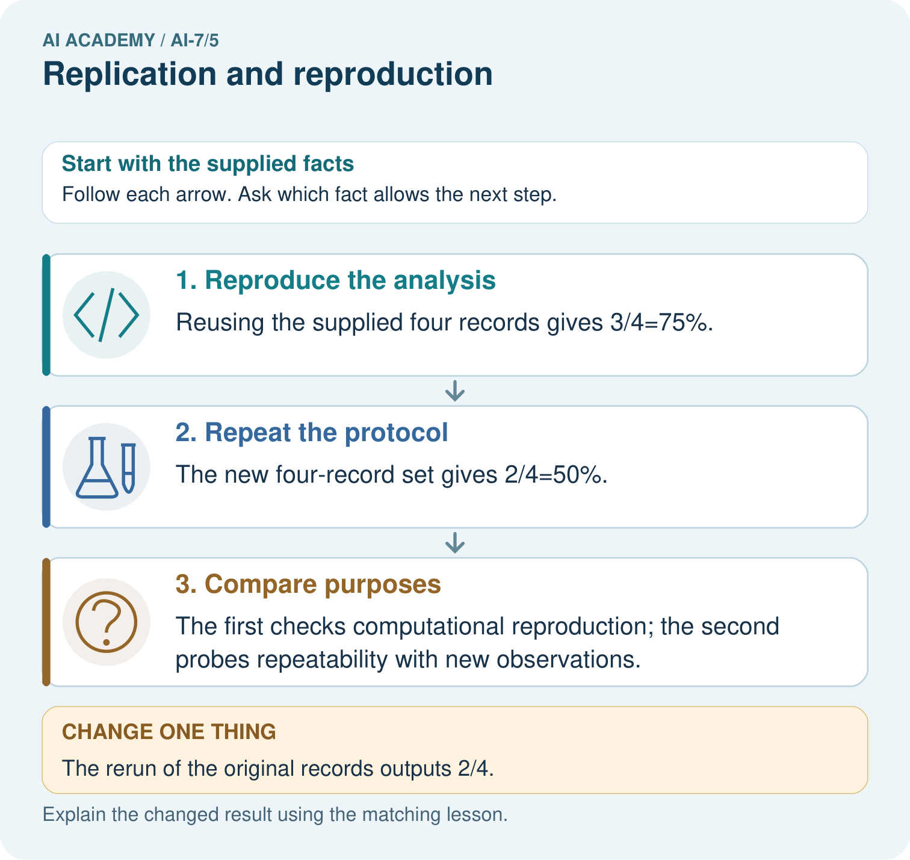
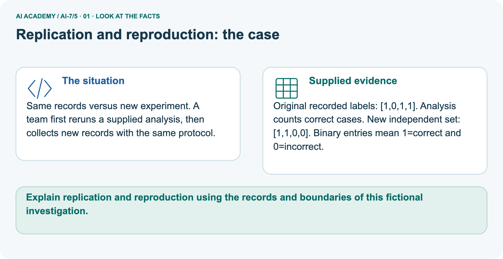
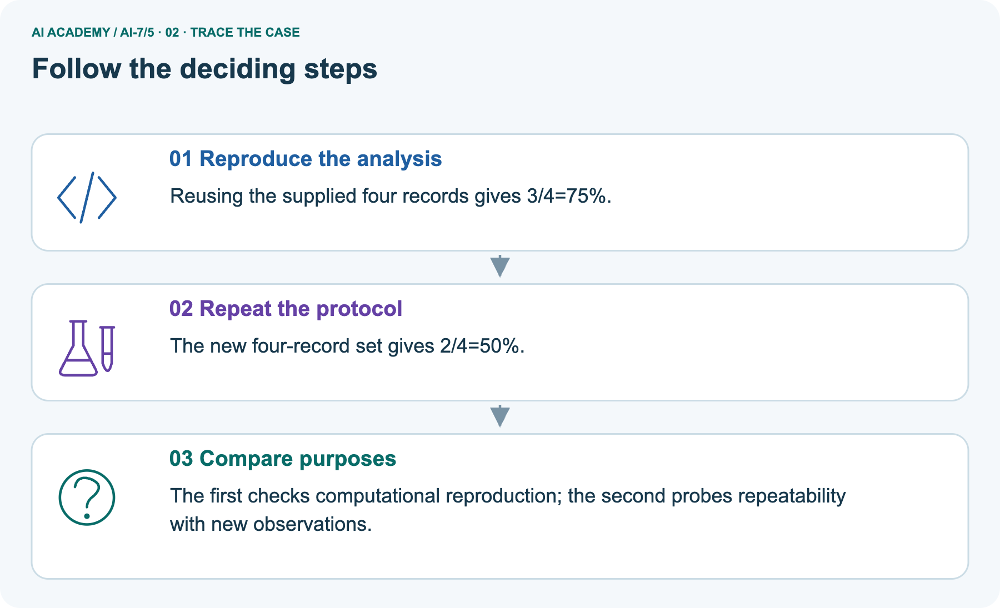
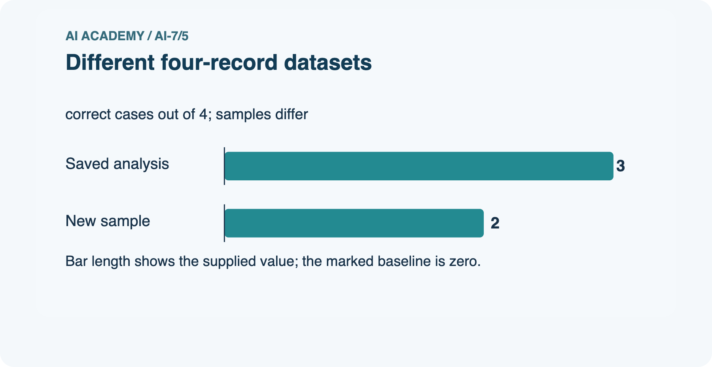
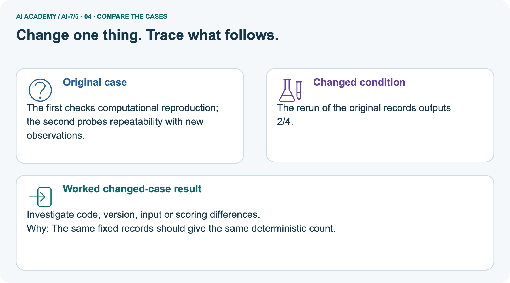
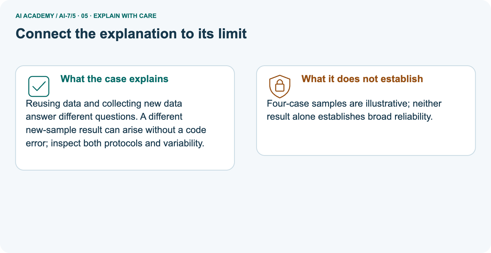

AI Academy · Level 7 · Grade 12 · Week 5 · Workbook
Replication and reproduction
Learn to understand, design, build, test and explain AI systems responsibly.
Project: Reproducible AI Research Study
THE CONNECTED WEEK
One complete artifact, run and case-evidence record.
Keep data/procedure versions, replay/new status, events, case IDs, outcomes and assumptions together.
Keep one habit: Recall → W1–W3/W5 → independent six-plus-four case → reproduction project → delayed return.
Main lesson · Section 1
Recall · Retrieve before notes
Keep this task’s inputs,rule and response together.
Complete task and evidence
Try the recall before opening notes. Then use a different colour or a labelled second line to correct your explanation.
Without opening the old lesson, explain one key idea from Methods results and limitations. Give an example and a mistake that the idea helps you avoid.
Without opening the old lesson, explain one key idea from Reading a research claim. Give an example and a mistake that the idea helps you avoid.
Methods results and limitations
Reading a research claim
Main lesson · Section 5
W1 · Explain the current example
Keep this task’s inputs,rule and response together.
Complete task and evidence
Project convention: replay/reproducing computation uses saved artifacts and stated procedure/environment; new-data replication collects new eligible observations under a comparable question/plan. Terms vary, so define them. Main Q1–Q8 original plus same-ID replay gives 16 evaluation events, 8 distinct cases, 0 new cases.
Different IDs alone do not establish statistical independence, and equal correctness outcomes do not mean duplicate cases. Separate picture recorded correctness flags [1, 0, 1, 1] yield 3/4=75%; same deterministic replay also 75%. New supplied flags [1, 1, 0, 0] yield 2/4=50%; across three runs 12 events/8 distinct IDs/4 new IDs. The picture’s independence is a supplied assumption, not tested by IDs.
New-sample score changes can occur without code error; original artifact unexpectedly scoring 2/4 needs data/code/settings/procedure investigation. Added deliberately changed-analysis example is one possible mismatch mechanism, not a real diagnosis. Preserve versions, protocol and raw fictional outputs. Code executes supplied fixtures, with no actual partner rerun or new collection, and no broad reliability claim.
Explain the weekly mechanism in your own words. Use the worked scenario to name its input, decision rule and output.
Main lesson · Section 6
W2 · Trace the worked case
Keep the supplied inputs, comparison rule and evidence together.
Complete task and evidence
Project convention: replay/reproducing computation uses saved artifacts and stated procedure/environment; new-data replication collects new eligible observations under a comparable question/plan. Terms vary, so define them. Main Q1–Q8 original plus same-ID replay gives 16 evaluation events, 8 distinct cases, 0 new cases.
Different IDs alone do not establish statistical independence, and equal correctness outcomes do not mean duplicate cases. Separate picture recorded correctness flags [1, 0, 1, 1] yield 3/4=75%; same deterministic replay also 75%. New supplied flags [1, 1, 0, 0] yield 2/4=50%; across three runs 12 events/8 distinct IDs/4 new IDs. The picture’s independence is a supplied assumption, not tested by IDs.
New-sample score changes can occur without code error; original artifact unexpectedly scoring 2/4 needs data/code/settings/procedure investigation. Added deliberately changed-analysis example is one possible mismatch mechanism, not a real diagnosis. Preserve versions, protocol and raw fictional outputs. Code executes supplied fixtures, with no actual partner rerun or new collection, and no broad reliability claim.
Partner reruns the same eight cases and gets the same score. Team counts sixteen independent cases. Show the intermediate steps and give the conclusion with its scope.
Main lesson · Section 7
W3 · Repair a misconception
Keep this task’s inputs,rule and response together.
Complete task and evidence
Project convention: replay/reproducing computation uses saved artifacts and stated procedure/environment; new-data replication collects new eligible observations under a comparable question/plan. Terms vary, so define them. Main Q1–Q8 original plus same-ID replay gives 16 evaluation events, 8 distinct cases, 0 new cases.
Different IDs alone do not establish statistical independence, and equal correctness outcomes do not mean duplicate cases. Separate picture recorded correctness flags [1, 0, 1, 1] yield 3/4=75%; same deterministic replay also 75%. New supplied flags [1, 1, 0, 0] yield 2/4=50%; across three runs 12 events/8 distinct IDs/4 new IDs. The picture’s independence is a supplied assumption, not tested by IDs.
New-sample score changes can occur without code error; original artifact unexpectedly scoring 2/4 needs data/code/settings/procedure investigation. Added deliberately changed-analysis example is one possible mismatch mechanism, not a real diagnosis. Preserve versions, protocol and raw fictional outputs. Code executes supplied fixtures, with no actual partner rerun or new collection, and no broad reliability claim.
A report omits this qualification: Exact replay can preserve the original design flaws; new data can change conditions and needs its own record.
Explain how omitting it could change a reader's interpretation, and write an accurate replacement.
Main lesson · Section 9
W5 · Explain the limitation
Keep this task’s inputs,rule and response together.
Complete task and evidence
Project convention: replay/reproducing computation uses saved artifacts and stated procedure/environment; new-data replication collects new eligible observations under a comparable question/plan. Terms vary, so define them. Main Q1–Q8 original plus same-ID replay gives 16 evaluation events, 8 distinct cases, 0 new cases.
Different IDs alone do not establish statistical independence, and equal correctness outcomes do not mean duplicate cases. Separate picture recorded correctness flags [1, 0, 1, 1] yield 3/4=75%; same deterministic replay also 75%. New supplied flags [1, 1, 0, 0] yield 2/4=50%; across three runs 12 events/8 distinct IDs/4 new IDs. The picture’s independence is a supplied assumption, not tested by IDs.
New-sample score changes can occur without code error; original artifact unexpectedly scoring 2/4 needs data/code/settings/procedure investigation. Added deliberately changed-analysis example is one possible mismatch mechanism, not a real diagnosis. Preserve versions, protocol and raw fictional outputs. Code executes supplied fixtures, with no actual partner rerun or new collection, and no broad reliability claim.
For the worked scenario, propose one additional case that could reveal a failure, describe its expected outcome before running it, and explain what would need to remain fixed for a fair comparison.
Do not reuse W4 as a new final test after receiving feedback.
Main lesson · Section 4
Try alone · Selected transfer
Keep this task’s inputs,rule and response together.
Complete task and evidence
Team repeats old six queries, then evaluates four newly reserved queries. How many distinct cases and which are new evidence?
Attempt this case before feedback. Record any help. Earlier examples below are further practice; a case already practised with feedback cannot establish fresh transfer.
Independent case: Apply a new case independently
Main lesson · Section 10
Project · Keep the research evidence
Preserve the question, protocol, observations, analysis and limits.
Complete task and evidence
Add a labelled replication and reproduction evidence sheet to Reproducible AI Research Study. Show how you can explain the mechanism and terminology of replication and reproduction.
Use the supplied fictional case and keep its inputs, intermediate steps, calculation or prediction, and limitation. Connect this record to last week’s record; a matching answer without a trace is insufficient.
Main lesson · Section 11
Feedback · Repair and return
Keep this task’s inputs,rule and response together.
Complete task and evidence
Revisit this idea with your teacher after a delay. Familiarity is different from explaining and using it on a changed case.
| Evidence | My record |
|---|---|
| Worked alone / hint / model | |
| First step I repaired and why | |
| New case checked later; date and result | |
| What I can now explain without notes | |
| One remaining question |
Reference bank and extra practice
Choose the reference that helps your next step.
Reference · Supported W2 record
Reference · Section 2
Reference · Supported W2 record
Keep this task’s inputs,rule and response together.
Complete task and evidence
Use W2: Trace the worked case for Replication and reproduction. Record the answer once; the lesson and workbook refer to the same attempt.
| Given inputs | Procedure I chose | Middle steps | Result and check |
|---|---|---|---|
Extra practice · Individual reasoning check
Reference · Section 3
Extra practice · Individual reasoning check
Keep this task’s inputs,rule and response together.
Complete task and evidence
Use the worked case for Replication and reproduction. Proposed explanation: “The worked result establishes every future case”. Decide whether this explanation is supported.
Point to the step or supplied fact that decides; explain your repair if needed.
Reference · Earlier W4 response copy
Reference · Section 8
Reference · Earlier W4 response copy
Keep this task’s inputs,rule and response together.
Complete task and evidence
Team repeats old six queries, then evaluates four newly reserved queries. How many distinct cases and which are new evidence?
Extra practice · Pictured case
Reference · Section 12
Extra practice · Pictured case
Keep this task’s inputs,rule and response together.
Complete task and evidence
Same records versus new experiment. A team first reruns a supplied analysis, then collects new records with the same protocol.
Original recorded correctness flags: [1,0,1,1]. Analysis counts correct cases. New independent set: [1,1,0,0]. Binary entries mean 1=correct and 0=incorrect.
Calculate the scores from the original and new four-record sets. Which activity reproduces saved analysis, which repeats the protocol, and why does a different rerun of the original data need investigation?
Support used: alone / hint / worked example. This record is practice evidence.
Project connection: For the Reproducible AI Research Study, retain an annotated worked trace and the changed-case reasoning.
Connect the claim to its records, units and assumptions so another investigator can challenge or reproduce it.






Reference · Project milestone
Reference · Section 13
Reference · Project milestone
Keep this task’s inputs,rule and response together.
Complete task and evidence
Project: Reproducible AI Research Study
Current milestone: Frame the need. Name the user, the problem, allowed inputs and a safe simple starting method.
For the Reproducible AI Research Study, retain an annotated worked trace and the changed-case reasoning. Connect the claim to its records, units and assumptions so another investigator can challenge or reproduce it.
| Evidence to keep | My record |
|---|---|
| This week’s input and deciding step | |
| Prediction and actual result (or labelled paper trace) | |
| One change since the previous checkpoint and why | |
| One error or limit and the next test |
Extra practice · Predict,check and repair
Reference · Section 14
Extra practice · Predict,check and repair
Keep supported feedback separate from the independent case.
First supported question and optional hint
Same records versus new experiment. A team first reruns a supplied analysis, then collects new records with the same protocol.
Which labelled step matches this detail? The first checks computational reproduction; the second probes repeatability with new observations.
1. Compare purposes
2. Reproduce the analysis
3. Repeat the protocol
Hint if needed: Read the steps in the pictorial case. Match the supplied detail to the stage that performs or records it.
Practice 1: explain the deciding evidence
Check after the first attempt
After your attempt, compare with the supported explanation: Compare purposes The first checks computational reproduction; the second probes repeatability with new observations.
Reusing data and collecting new data answer different questions. A different new-sample result can arise without a code error; inspect both protocols and variability.
Changed-case question and optional hint
Changed-case practice: The rerun of the original records outputs 2/4. Which conclusion is supported by the supplied facts?
1. This one example guarantees correct results for every future input.
2. We can decide the result without examining the changed input or the procedure.
3. Investigate code, version, input or scoring differences.
Hint if needed: Use the changed condition and the deciding step in the pictorial trace. The answer must say what follows from those facts.
Practice 2: explain the deciding evidence
Check after the changed attempt
After your attempt, compare with the supported explanation: Investigate code, version, input or scoring differences. The same fixed records should give the same deterministic count.
Repair and retain the record
Review Methods results and limitations (ai-7/4). Goal: Explain the mechanism and terminology of methods results and limitations.
Short practice: Place the five-photo procedure, 3/5 versus 4/5 finding and missing outdoor evidence in their proper categories. Why cannot the result establish that B is best for outdoor farming?.
Return to this week and explain what you changed.
Review Reading a research claim (ai-7/2). Goal: Explain the mechanism and terminology of reading a research claim. Short practice: Calculate the baseline and new rates for 2/10 and 4/10.
Explain both twice the rate and the percentage-point change, and say why neither measures every learner’s improvement.. Return to this week and explain what you changed.
Use Download completed work in the hosted lesson to export your answers, reflections, practice feedback and code-run evidence. Open the HTML copy to read or print it.
Drafts stay in this browser when storage is available; clear drafts on a shared device.
Earlier wording, alternatives and picture transcripts
Use this supported practice once, in the browser or on paper. Keep the reserved independent assessment for a separate first attempt before teacher feedback.
Repair a missing building block
Keep your completed work
Reference · Six-picture response sheets
Reference · Section 15
Reference · Six-picture response sheets
Choose the picture that helps explain the current step.
01. Replication and reproduction: the case



Same records versus new experiment. A team first reruns a supplied analysis, then collects new records with the same protocol. Supplied facts: Original recorded correctness flags: [1,0,1,1]. Analysis counts correct cases. New independent set: [1,1,0,0]. Binary entries mean 1=correct and 0=incorrect.
Point to the given fact that matters most. Explain why it matters.
02. Follow the deciding steps



Reproduce the analysis: Reusing the supplied four records gives 3/4=75%. → Repeat the protocol: The new four-record set gives 2/4=50%. → Compare purposes: The first checks computational reproduction; the second probes repeatability with new observations.
Point to each numbered stage and explain which recorded input it uses.
03. Different four-record datasets



Different four-record datasets. Units: correct cases out of 4; samples differ. Saved analysis: 3. New sample: 2.
Read the labels and values. Explain the relationship the model shows.
04. Change one thing. Trace what follows.



Original case: The first checks computational reproduction; the second probes repeatability with new observations. Changed condition: The rerun of the original records outputs 2/4.
Expected result: Investigate code, version, input or scoring differences. Reason: The same fixed records should give the same deterministic count.
Predict before checking the worked changed-case result. Name what changed and what the supplied facts allow you to conclude.
05. Connect the explanation to its limit



Reusing data and collecting new data answer different questions. A different new-sample result can arise without a code error; inspect both protocols and variability.
Limit: Four-case samples are illustrative; neither result alone establishes broad reliability.
Explain the case, then point to a limit on the claim.
06. Make the idea visible in your project


For the Reproducible AI Research Study, retain an annotated worked trace and the changed-case reasoning. Connect the claim to its records, units and assumptions so another investigator can challenge or reproduce it.
Draw your input, deciding step, result and limit. Supported question: Calculate the scores from the original and new four-record sets.
Which activity reproduces saved analysis, which repeats the protocol, and why does a different rerun of the original data need investigation?
Draw your project trace and justify the deciding step using evidence.